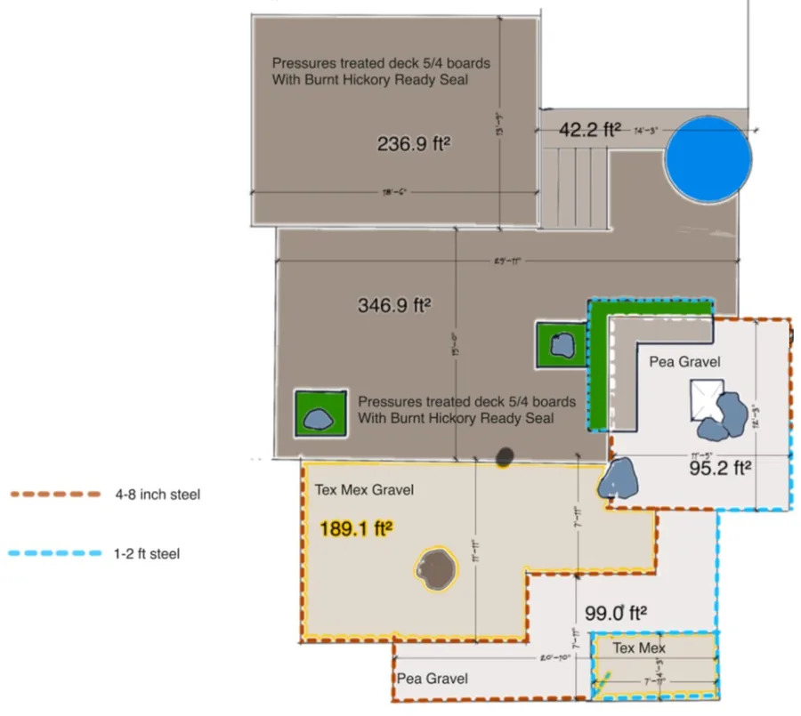
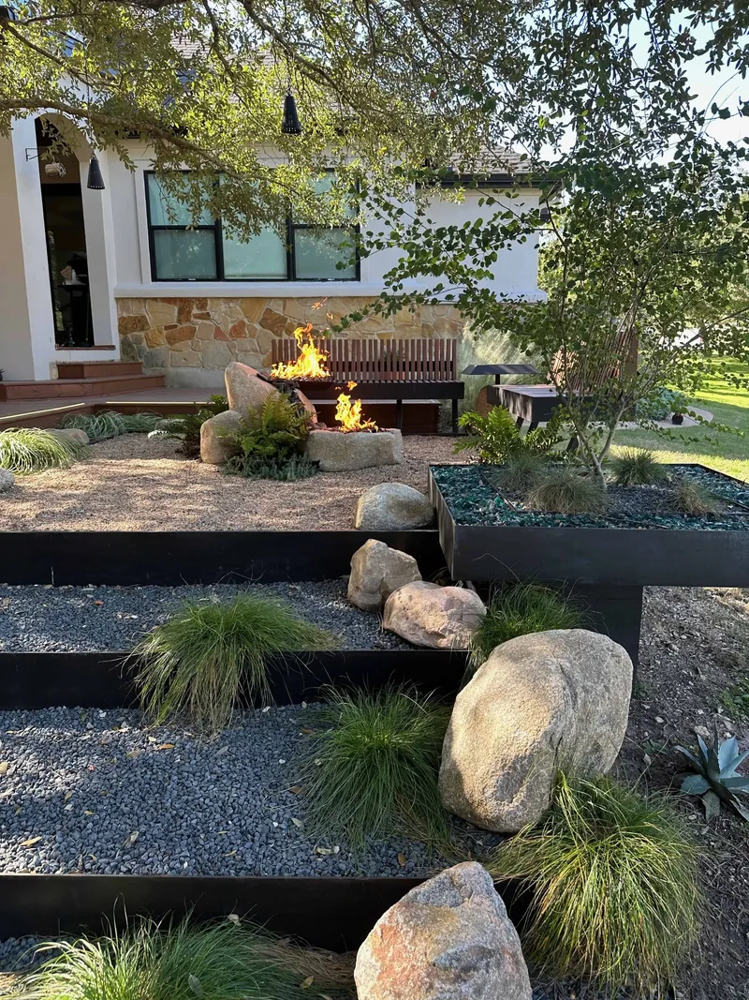

In Steiner Ranch, every exterior change, landscaping included, needs written approval from your association’s architectural committee before work starts, and the committee has up to 30 days to answer. Steiner Ranch has more than one owners association, so the first step is finding out which one your lot is in. This guide gives the steps, the paperwork, and the landscape rules, taken from the associations’ own documents as they were posted on November 25, 2026. Red Agave Landscape draws the plan a committee reviews, and our own crew builds it.
Which HOA Reviews a Landscape Project in Steiner Ranch?
One of three. The Steiner Ranch Master Association says it on its own FAQ page: "There are 3 HOA’s in Steiner Ranch!" The page does not say which streets belong to which, so call the office if your closing papers do not settle it.
| Association | Covers | Managed by | Where the application goes |
|---|---|---|---|
| Steiner Ranch Master Association (SRMA) | Neighborhoods under the Master Declaration | Alamo Management Group, 12550 Country Trails Ln, 512-266-7553 | The resident portal |
| Steiner Ranch Residential Owners Association (SRROA) | Chaparral, Hancock Hill, Mesa North, Plateau, Rocky Ridge, Summit at East Ridge, and Valley at East Ridge | Goodwin & Company | The Architectural Review tab in TownSq |
| The UT Golf Club area | The golf course development area | Its own association | SRMA assigned its architectural authority for that area to the golf club association in 2022 |
The SRROA section list comes from its own site.
Each neighborhood also has its own recorded declaration. The Residential Design Guideline Manual, which both associations use, says those neighborhood documents "will supersede any provisions in these Design Guidelines." Read yours before the design starts.
What Needs Approval Before Work Starts?
All of it. The SRMA FAQ says "any work done to the exterior of a residence or lot requires approval from the Architectural Controls Committee (ACC)," and that this includes "changes to paint, windows, all landscaping, fencing, and pools." The Master Declaration says the same in Section 6.01.
The documents name these outdoor projects:
- Landscaping changes: any change, including a move to xeriscape
- Patios, decks, and patio covers
- Outdoor kitchens, outdoor fireplaces, and fire pits
- Pools and spas
- Fences, gates, freestanding walls, and retaining walls
- Lighting: "The AC must approve all lighting"
- Gravel as a ground cover, and dry creek beds
- Rain barrels, sheds, play structures, gazebos, and trellises
- Tree trimming: the FAQ says it "requires a permit through the HOA"
- Anything beside a greenbelt: no clearing, trimming, mowing, or access without written approval
Starting early has a price. The SRMA application form says: "Any work commencing prior to receiving written approval is a violation and will constitute fines." The Manual also lists stopping construction and removing what was built among the association’s remedies.
What Goes in the Application?
A form and a set of drawings. SRMA owners file through the resident portal. The Architectural Modification Application Form asks for three things:
- A plan with elevation views at a minimum of 1/8 inch scale, with a description of the materials, their dimensions, and color samples
- A plot plan that shows where the improvements go and the distance to each property line
- Any addendum for the type of project, such as the pool addendum
A landscape or xeriscape project needs more. SRMA’s xeriscape rules ask for the completed application, a property survey with dimensions and the existing trees with their sizes, a separate scaled landscaping plan, a plant list with the quantity and size of each species, and samples or photos of the materials.
Those are drawings we already make. A Red Agave landscape design is a dimensioned CAD plan with a plant palette and material selections, so the committee reviews a finished plan. The Manual also encourages an early meeting with a committee representative before the application goes in.


How Long Does Steiner Ranch HOA Approval Take?
Up to 30 days once the application is complete. Plan for longer, because the clock does not start until every item is in.
| Step | What the documents say |
|---|---|
| When to file | The Master Declaration calls for plans at least 45 days before the planned start |
| The answer | "The AC has a maximum of thirty (30) days to render a decision" (SRMA form) |
| When the clock starts | When all the requested information has been received |
| No answer in 30 days | The Master Declaration says the plans "shall be deemed denied" |
| How long an approval lasts | 90 days to start, under the Master Declaration |
| Changes after approval | Resubmit them before they are made |
| When the work is done | Call for an inspection no more than 7 days after the completion date on the approval |
One warning about silence. The older Design Guideline Manual says an application with no answer is deemed approved. The Manual itself gives priority to the Declaration, and the Declaration says deemed denied. Wait for the written approval.
A denial is not the end. Under the Texas Property Code, Section 209.00505, an association with more than 40 lots has to put a denial in writing, describe the reason and the changes that would win approval, and tell the owner about the right to a hearing. The owner has 30 days from the mailing of the notice to ask for one, and the board has 30 days from the request to hold it.
What Are Steiner Ranch’s Xeriscape Rules?
The Master Association adopted xeriscaping rules on February 20, 2026. Where they conflict with the Design Guideline Manual, the xeriscape rules control. These are the ones that shape a design:
| Topic | Rule |
|---|---|
| Lawn | "Complete and full removal of turf grass or sod is not allowed" |
| Plant cover | At least 50 percent of the converted area covered by living plants one year after installation |
| Plant size | Starter plants of 5 gallons or larger. Smaller sizes need the committee’s approval |
| Gravel | "Discouraged as ground cover and must only be used minimally" |
| Color | Rock, pavers, walls, and gravel in natural colors. Stark white, reflective surfaces, colored glass mulch, and red or black lava rock are rejected |
| Edging | Required where loose material meets turf or beds, and no more than 2 inches above grade |
| Artificial turf | Not allowed in the front yard or in the strip between the curb and the sidewalk |
| Curb strip | Plants under 18 inches tall, no thorns or spikes, no rock or gravel under 1.5 inches, and boulders no taller than 18 inches |
| Front yard materials | No cinder block, no pressure treated lumber, no railroad ties, and no more than 3 decorative features |
| Plants | Invasive species are prohibited, including chinaberry, ligustrum, photinia, and golden or sacred bamboo. Highly toxic plants such as oleander are prohibited in a xeriscape design |
| Wildfire | Avoid highly flammable species within 5 to 30 feet of the house |
| Irrigation | A backflow prevention device is required, and watering follows the water district’s rules |
Texas law sets the outer limit. The Texas Property Code, Section 202.007 says an association cannot prohibit drought-resistant landscaping or water-conserving natural turf. It can require a plan for review, and it can regulate gravel, rocks, and cacti. It cannot unreasonably deny the plan.
For the planting itself, see our xeriscape page and our Steiner Ranch page, which covers fire-wise planting on these lots.
What Do the Guidelines Say About Walls, Fences, Fire, and Lighting?
These come from the Residential Design Guideline Manual. Your neighborhood declaration can be stricter.
| Element | Rule in the Manual |
|---|---|
| Retaining walls | Native white limestone with a level, coursed, dry-stack look, "unless otherwise approved by the AC" |
| Walls along a street | No taller than 4 feet. A bigger grade change is terraced, with 4 feet clear between walls |
| Fences | A fence other than the required backyard privacy fence needs written consent. Chain link is not permitted. No gates into greenbelts or open space |
| Decks | Every deck is submitted. Wood decks are not permitted in the front yard |
| Outdoor kitchens, fireplaces, and fire pits | Not in the front yard. Built of materials that go with the house, and approved in writing. Kitchens and fireplaces stand no taller than 15 feet |
| Propane tanks | Reviewed case by case, and never above ground |
| Lighting | White or off-white, aimed so it does not spill onto a neighbor’s property |
| Accessory structures | At least 5 feet from the side and rear property lines |
| Impervious cover | Capped for each lot by a note on the subdivision plat. Patios and walks count |
Steel is the material we use most for terraces and edging. In Steiner Ranch a steel retaining wall is a request for the committee’s specific approval, because limestone is the Manual’s standard. The drawing shows the height of every wall and edge, and it goes in with the application. Our retaining walls page shows the walls we build in steel, limestone, block, concrete, and boulders.
What About Watering Rules and County Permits?
Two more sets of rules sit beside the HOA’s.
Water. Steiner Ranch gets its water from Travis County WCID No. 17. The district’s Stage 1 notice, dated July 15, 2025, allows watering twice a week:
| Address ends in | Watering days |
|---|---|
| 0, 1, 2, or 3 | Monday and Thursday |
| 4, 5, or 6 | Tuesday and Friday |
| 7, 8, or 9 | Wednesday and Saturday |
Watering hours are midnight to 10 a.m. and 7 p.m. to midnight, and no automated systems run on Sunday. Hand-held hose watering is allowed any day outside 10 a.m. to 7 p.m. The district’s Drought Contingency Plan exempts drip irrigation from the twice-a-week limit in Stage 1.
Permits. HOA approval is not a permit. The Manual says: "Approval by the AC shall not be deemed to be approval by the governing entities." Travis County Development Services handles permits for development outside city limits, and Steiner Ranch sits outside Austin’s full-purpose limits. The City’s jurisdiction map shows which rules cover a given lot.
How Does Red Agave Work With a Steiner Ranch Committee?
We draw first. The owner of Red Agave designs every project after a free on-site consultation, and the CAD plan is included. That plan carries what the application asks for:
- Dimensions: every bed, slab, wall, and path drawn to scale, with the distance to each property line
- Heights: each wall and each steel edge marked by height
- Plants: a plant list with sizes and quantities, built around natives that take the heat, the deer, and a twice-a-week watering schedule
- Materials: the stone, steel, concrete, and gravel selected with samples in hand
The application itself goes in through your resident portal, with our drawings attached. When the approval comes back, the same team that drew the plan builds it. See real drawings on our design plans page, and the Lewis Mountain yard above on its project page.
What Sources Did We Use?
Every rule above comes from the documents below, read on November 25, 2026. Associations update their documents, so open the current copy before you design.
- Steiner Ranch Master Association: FAQ, Architectural Modification Application Form, Master Declaration, Residential Design Guideline Manual, and xeriscaping rules
- Steiner Ranch Residential Owners Association
- Travis County WCID No. 17: Stage 1 notice and Drought Contingency Plan
- Travis County Development Services
- Texas Property Code, Section 202.007 and Section 209.00505
Steiner Ranch HOA Approval
Do I need HOA approval to change my landscaping in Steiner Ranch?
Yes. The Master Association says any work done to the exterior of a residence or lot requires approval from its architectural committee, and it names all landscaping. Its 2026 xeriscape rules repeat it: owners need written approval for any landscaping changes before installing them.
How long does Steiner Ranch HOA approval take?
The committee has a maximum of 30 days to decide once the application is complete. The Master Declaration calls for plans at least 45 days before the planned start, so file early.
Can I replace my lawn with xeriscape in Steiner Ranch?
In part. The Master Association’s 2026 rules allow xeriscape with an approved plan, but they do not allow complete removal of turf grass, and living plants have to cover at least 50 percent of the converted area within a year. Texas law bars an association from prohibiting drought-resistant landscaping.
Is artificial turf allowed in Steiner Ranch?
Not in the front yard or in the strip between the curb and the sidewalk, under the Master Association’s 2026 xeriscape rules. The older Design Guideline Manual prohibits synthetic turf materials. Get the committee’s answer in writing before planning any.
What happens if I build without approval?
The application form calls it a violation that will bring fines. The Design Guideline Manual also lists stopping construction and removing the improvements among the association’s remedies.
Does HOA approval replace a building permit?
No. The Design Guideline Manual says approval by the committee is not approval by the governing entities. Travis County handles permits for development outside city limits.